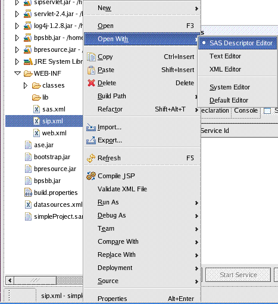
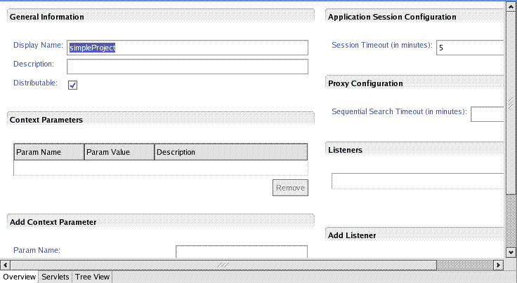

Deployment Descriptors Editor
BayPackets Agility IDE provides XML Editor for editing various deployment descriptors.
Example When a user creates a SIP Based project then two deployment descripors are generated
sip.xml and cas.xml. In this example we will show how to edit sip.xml
Editing sip.xml
Create the BayPackets project. Select the WEB-INF/sip.xml file and then right click and open it with CAS Descriptor Editor.

CAS Descriptor editor opens the sip.xml file in a GUI form whcih
is very easy to edit. User can add Context Parameters, Servlets and
various servlet specific parameters through this highly efficient GUI.
